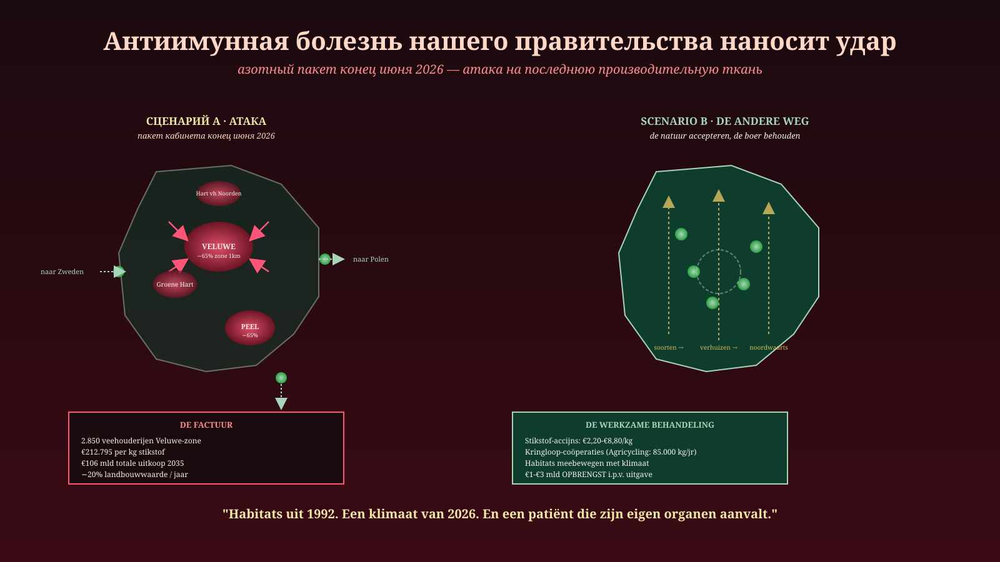
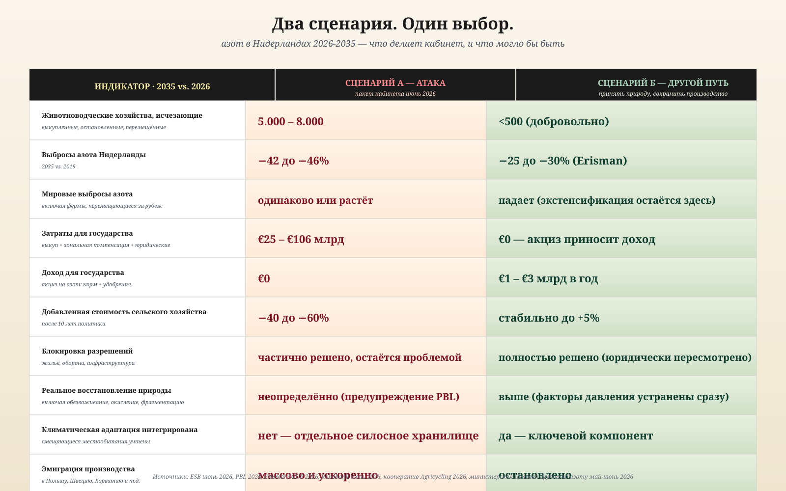

Анти-иммунная болезнь нашей власти наносит удар
Азотный пакет конца июня 2026 — атака на последнюю продуктивную ткань. И есть другой путь.
Jacobus van Merksteijn · 19 июня 2026
В пятницу 26 июня кабинет Йеттена представляет свой азотный пакет. Это будет самая тяжёлая атака на нидерландского фермера за пятьдесят лет.
Что лежит на столе на этой неделе:
Зоны от 500 до 1000 метров вокруг двадцати крупных территорий Natura 2000. В их пределах 2850+ животноводческих хозяйств только в Велюве должны исчезнуть, переехать или внедрить инновации. Сокращение: 65%, цель — 69%.
Источник: WNL, 17 июня 2026
Общенациональное сокращение 42–46% для сельского и садового хозяйства к 2035 году. Промышленность и транспорт: 50%. Специфические для предприятий нормы выбросов, принудительная привязка молочного животноводства к земле с 2032 года, продолжение программы выкупа Lbv.
Источник: Рабочая группа по сельскому хозяйству, природе и азоту, 28 мая 2026
€212.795 за килограмм азота — столько стоит выкуп по программе Lbv. Килограмм азота в комбикорме стоит фермеру €1,50. В 140.000 раз дороже проблемы. Чтобы достичь правительственных целей 2035 через выкуп: €106 миллиардов.
Источник: ESB, 16 июня 2026
Добавленная стоимость сельского хозяйства –20% только за 2026 год. Фермы сносятся и отстраиваются заново в Польше, Швеции, Хорватии, Перу и Украине. Именно молодые, современные фермы уходят.
Источники: Rabobank, 12 июня 2026 · NieuwRechts, 15 июня 2026
Таков пакет. Что он представляет собой в действительности, на языке медицины:
Анти-иммунная болезнь нашей власти, которую мы ранее описывали в этой газете, теперь вступает в полную силу. Руководство атакует продуктивную ткань — на основании расчётных моделей 2019 года, в климате 2026 года, ради защиты ареалов, которые сами уже смещаются на север.
Безумие в одном числе
Один показатель суммирует всю болезнь.
€212.795. Именно столько государство платит, чтобы убрать один килограмм азота из зоны Natura 2000 через программу выкупа Lbv.
Тот же килограмм в комбикорме обходится фермеру в €1,50.
Общественный ущерб от этого килограмма, по максимальной оценке: €8,80.
Мы тратим €212.795, чтобы предотвратить ущерб в €8,80. Соотношение — 1 к 24.000. Ни один думающий человек не может защитить такое решение. И тем не менее политика продолжается — и даже расширяется.
Почему? Потому что система больше не думает. Она исполняет. Государственный совет в 2019 году сказал: азот надо снижать. Модели говорят: столько в год. Чиновники говорят: значит, столько фермеров должно уйти. Никто больше не спрашивает: а верна ли эта конструкция вообще?
Что тем временем делает природа
Пока мы считаем по целям 2019 года, реальность движется.
Граница леса смещается на север. Средиземноморские виды обосновываются в Брабанте. Скандинавские хвойные леса сокращаются, птицы гнездятся на несколько недель раньше, насекомые перемещают свои ареалы на сотни километров за десятилетие.
Ареалы, ради которых мы выкупаем фермеров, сами уходят из охраняемых территорий.
Мы защищаем марки почтовых типов растительности, которым климат уже не подходит. Мы боремся за существование видов в местах, где они больше не хотят быть. И делаем это, уничтожая фермеров, которые могли бы их поддержать — через природосберегающее земледелие, круговое хозяйство, углерод почвы.
Это не политика. Это аутоиммунная реакция на реальность, которую организм больше не воспринимает.
Два сценария
На ближайшие десять лет есть ровно два пути. Один — это пакет пятницы 26 июня. Другой — то, что сделало бы здоровое руководство.

Десять показателей. Два исхода. Выбор лежит на столе этой недели.
Сценарий A — Пакет кабинета
Система доводит аутоиммунную болезнь до конца.
- От 5.000 до 8.000 животноводческих хозяйств исчезают
- Стоимость сельскохозяйственной продукции сокращается на 40–60% за десять лет
- Фермы массово переезжают за рубеж — там поголовье скота растёт
- Глобальные выбросы азота остаются прежними или растут
- Расходы государства: от €25 до €106 миллиардов
- Разрешительный тупик сохраняется (PBL: азот остаётся давлением)
- Природа восстанавливается недостаточно — осушение и закисление не устраняются
- Климатический сдвиг не учитывается
Пациент слабеет от всё более тяжёлых лекарств. Страна атакует собственные продуктивные клетки, чтобы защитить ареалы, которых вскоре не будет.
Сценарий B — Другой путь
Три принципа. Никаких атак на продуктивную ткань.
Первый. Облагайте налогом то, что хотите сократить, вместо того чтобы изгонять то, что вам нужно. Исследование ESB указывает путь: акциз на азот в размере €2,20–€8,80 за килограмм на комбикорм и минеральные удобрения. Никакой полной экспроприации — целевой стимул, позволяющий фермерам выбирать: экстенсификацию, круговое хозяйство или продолжение работы. Доход: от €1 до €3 миллиардов в год. Для государства — чистая прибыль, а не чистые расходы.
Второй. Прекратить зонирование и выкуп. Немедленно прекратить Lbv и Lbv-plus. Отменить зоны 500 и 1000 метров. Заменить правовую основу (критические нагрузки как правовую норму) на целевой показатель по территории, который учитывает климатический сдвиг. Кабинет сам уже работает над заменой критических нагрузок на отраслевые цели по выбросам — это открытие, которое нужно использовать радикально.
Третий. Принять, что ареалы смещаются. Natura 2000 создана в 1992 году. Директива об ареалах исходит из статичных зон. Но среды обитания движутся вместе с климатом. Природный план, который Нидерланды должны сдать в Брюссель 1 сентября 2026 года, может закрепить этот новый принцип: защищать движущуюся среду обитания, а не неизменные марки устаревшей растительности.
Живое доказательство того, что это возможно
В Фрисландии работает кооператив фермеров под названием Agricycling. Они перерабатывают городские остатки в компост и заменяют им минеральные удобрения.
В 2025 году они переработали 12.600 тонн остатков в 11.340 тонн компоста. Тем самым они заменили 317.940 кг минеральных удобрений — что соответствует 85.844 кг азота. Никакого выкупа, никакой субсидии в €212.795 за килограмм. Работающий круговорот с чистой общественной стоимостью €4,4 миллиона в год.
Источник: Duurzaam Ondernemen, 27 мая 2026
Один кооператив. Горстка фермеров. Масштабируемо на всю страну. Но это не вписывается в пакет кабинета — потому что он требует фермеров, которые останутся, а пакет построен на идее, что фермеры должны уйти.
Сценарий A: €212.795 за кг меньше азота — через выкуп.
Сценарий B: 85.000 кг азота в год заменяется круговым хозяйством — с прибылью.
Оба работают. Один убивает фермера. Другой его укрепляет.
Что наука давно знает
Самое болезненное в этой ситуации: научная дискуссия уже закончилась.
- ESB (16 июня 2026): выкуп не работает, налогообложение и аукционы — работают
- Профессор Эрисман (Второй кабинет, 2026): достаточно 25% снижения в масштабах страны при целевом подходе — не 42–46%, которые требует кабинет
- PBL (Nieuwe Oogst, 21 мая 2026): только снижение азота не ведёт к восстановлению природы — осушение и закисление столь же серьёзны
- Agricycling Friesland: круговое земледелие даёт конкретное доказательство, что возможен другой путь
- Wageningen UR: буферные полосы дают эффект 5–10% по азоту в воде, но лишь через 1–5 лет — общая политика целей не достигает
Один и тот же сигнал. И руководство игнорирует их всех. Не из злого умысла. Потому что оно не способно распознать болезнь в себе.
Что нужно сделать сейчас
Пять решений первых ста дней
- Отозвать азотный пакет 26 июня. Не скорректировать, а отозвать. Он ошибочен в своей основе.
- Немедленно прекратить Lbv и Lbv-plus. Демонтировать механизм выкупа. €212.795 за кг — это не политика.
- Ввести акциз на азот. €2,20–€8,80 за кг на комбикорм и минеральные удобрения. Доходы — в переход к природосберегающему земледелию и круговым пилотам.
- Отменить критические нагрузки как правовую норму. Заменить отраслевыми целями по выбросам, привязанными к концепции движущегося ареала.
- Переписать Природный план 1 сентября 2026 года. Защищать движущуюся среду обитания. Признать климатический сдвиг данностью. Прекратить использование марок 1992 года.
Конец самообмана
Пакет кабинета, представленный в пятницу 26 июня, будет назван «сбалансированным», «научно обоснованным» и «необходимым». Его поддержат GroenLinks-PvdA, D66, VVD, CDA, NSC и в значительной мере работодательские организации и FNV.
Его представят как решение.
Это болезнь. Анти-иммунная болезнь нашей власти, вступающая в свою самую агрессивную фазу.
И именно в этот момент гражданин должен сказать: нет. Не под нашими именами. Не нашими голосами. Не с нашими фермами, нашей землёй, нашим будущим.
Готов другой пакет. Он ничего не стоит. Он приносит доход. Он даёт фермеру жить. Он даёт природе дышать. Он учитывает климат. Ему не хватает только одного: руководства, способного думать.
Пока такого руководства нет, ответственность лежит на нас. На фермере, который не хочет уходить, на директоре-собственнике, который ещё верит, на предпринимателе МСП, который видит, что идёт, на работнике, который чувствует это в расчётном листке.
Мы — T-reg клетки. Мы — здоровая противодействующая сила, которая способна вывести из игры аутоиммунную клеточную линию — но только если мы пробудимся.
26 июня приближается. Пакет приближается. Пора его отвергнуть. И положить на стол другой.